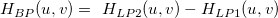
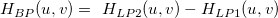

である事に注意しましょう。
である事に注意しましょう。
である事に注意しましょう。
ここでとは、それぞれ低域カットオフ周波数Fc1 と高域カットオフ周波数Fc2を持つローパスフィルタです。
である事に注意しましょう。
/math-1a952e410fe1ee45d9db272a5ea0f3d1.png)
ここで、、 、は下側および上側しきい値です。
しきい値フィルタに対して、ウィンドウ法は使用されません。
2D FFTフィルタは行列や画像などの2D信号を処理する方法を提供します。最初に2次元の高速フーリエ変換(2D FFT)を実行し、そして、それらに周波数領域フィルタを適用し、最終的に2D IFFTを実行して、空間領域に変換して戻します。
2D FFTフィルタでは、5つのフィルタと4種類のウィンドウ法が利用できます。
内容 |
フィルタの種類には、ローパス, ハイパス, バンドパス, バンドブロック, しきい値があります。
ハイパス, バンドパス, バンドブロックはローパスを使って作成することができます。
2D FFTフィルタのフィルタの種類は、次の表に表示しています。ローパス, ハイパス, バンドパス, バンドブロックの2Dフィルタをより簡単に理解するため、表にある各フィルタタイプに対して、Idealウィンドウが使用されています。
2Dフィルタ H(u,v)に対して、u=0, 1,.., M-1, v=0, 1,..., N-1となっている時、周波数成分を正規化します。その時、m=(u-M/2)/M, n=(v-N/2)/N となり、ここで -0.5<m<0.5 -0.5<n<0.5 .rは
定義され、はカットオフ周波数です。
| ローパス | カットオフ周波数より大きいすべての周波数成分をブロックし、小さい周波数のみを通します。 |
|---|---|
| ハイパス | カットオフ周波数以下の周波数成分をブロックします。
|
| バンドパス | 低域および高域カットオフ周波数で指定した範囲の周波数を通します。
である事に注意しましょう。 ここでとは、それぞれ低域カットオフ周波数Fc1 と高域カットオフ周波数Fc2を持つローパスフィルタです。 |
| バンドブロック | 選択した範囲内の周波数を除去します。
である事に注意しましょう。 |
| しきい値 | 振幅が下側しきい値と上側しきい値の間にあるような周波数成分のみを通します。
ここで、、 、は下側および上側しきい値です。 しきい値フィルタに対して、ウィンドウ法は使用されません。 |
2D FFTフィルタのウィンドウ法には、Butterworth, Ideal, Gaussian, Blackmanが含まれます。
ハイパス, バンドパス, バンドブロックフィルタは、Ideal ウィンドウと同じ方法で他のウィンドウ法に対しても、ローパスフィルタから作成することができ、これはフィルタの種類の表にリストされています。そのため、各ウィンドウ法のローパスフィルタのみが以下に説明されています。
2Dフィルタを生成する一般的な方法は、対応する1Dフィルタウィンドウをm-nの正規化した領域で回転することです。例えば、 を使って、1D Butterworthウィンドウ関数の変数を置き換えることができます。手順の例として2DローパスButteworthフィルタを生成します。
1D Butterworthウィンドウ関数は、次のように表されます。
パラメータは以下に説明されています。
2D FFTフィルタに対して、m = ( u - M/2 ) / M, n = (v - N/2 ) / Nとなります。mとnは、範囲[-0.5, 0.5]にあります。m-n周波数領域で1D Butterworthウィンドウを回転し、 とします。2D Butterworthローパスは次式で表されます。
とします。2D Butterworthローパスは次式で表されます。
H(u,v)は、循環領域内の値のみを取ります。。この半径はR = max(-m[0], m[M-1], -n[0], n[N-1] )で決まります。r > Rのとき、H(u,v)の値はゼロにセットされます。カットオフ周波数Fcは、範囲(0, R]内にあります。
カットオフ周波数は、2Rで正規化され、Fcの値は常に (0, 0.5]です。
2D FFTフィルタを作成する手順は以下の通りです。
/Algorithm_make_2d_filter.png)
Fc=0.3, p=1の2D Butterworthローパスフィルタは、以下の通りです。
Idealフィルタは、フィルタの種類のテーブルにあります。
2D Gaussianローパスフィルタは次式で表されます。
2DGaussianフィルタに対して、カットオフ値は、H(u,v)が最大値の0.607倍まで減少する場所です。Fcが大きければ大きいほど、フィルタは滑らかになります。
Fc=0.2, p=1の2D Gaussianローパスフィルタは、以下の通りです。
/Algorithm_gau_filter.png)
2D Blackmanローパスフィルタは次式で表されます。
このウィンドウ関数は、一般に見られる標準の形式とは少し異なり、これはハイパスです。ここでローパスフィルタが欲しいので、rに0.5を足して、フィルタをローパスに変えます。
OriginProの2DFFTフィルタは、Blackmanウィンドウをカットオフするかどうかを決めるTruncateウィンドウオプションを提供します。
最初のグラフで切詰めなし、2番目のグラフで切詰めありの2DBlackmanローパスフィルタは、それぞれ次のように表示されます。
/Algorithm_bmw_filter.png)
Origin Proの2D FFT Filtersはカットオフ値を指定する4つの方法をサポートしています。これらはFraction、Fourier Pixel、 Wavelength、Hertzです。これら4つの関係は、以下のようになっています。
| Fourier Pixel | データを保存している行列のピクセルです。値はdouble型の正数にすることができます。 |
|---|---|
| Fraction | Fraction(小数部) = Fourier Pixel / sqrt( (cols/2)^2+(rows/2)^2 ), ここで、colsとrowsは、それぞれフィルタの行と列の数です。 |
| Wavelength | Wavelength = (cols-1) / Fourier Pixel |
| Hertz | Hertz = Fourier Pixel / cols |